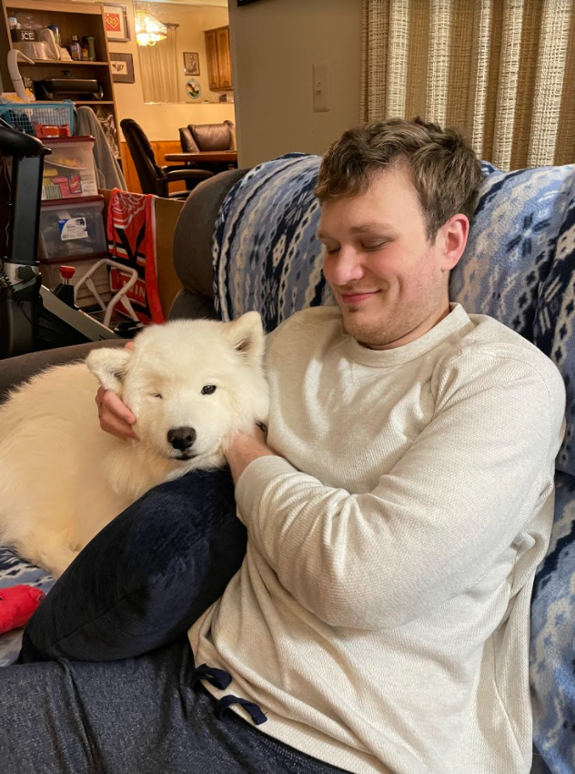

Facts that help to explain the majestic creatures that are snow leopards.
Hi there, my name is Dakota Hurlburt and I love snow leopards. Ever since seeing them for the first time at Toledo Zoo, knew they were my favorite animal around. I love being able to give information on them and to learn more about them and share that with the world.
Some info about me is that I am 23 years old, I currently am going to school for Information Science, and some of my favoorite hobbies include working on costumes for conventions, editing youtube videos together, and making goofy things from pipe cleaners. Also, here I am with a very adorable dog named Kona.
